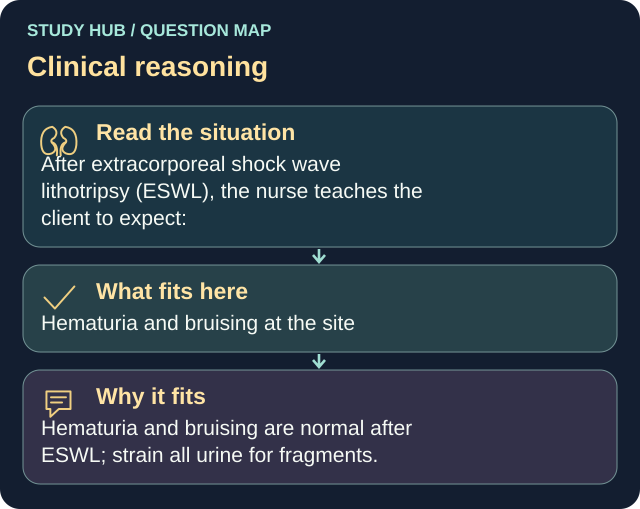

After extracorporeal shock wave lithotripsy (ESWL), the nurse teaches the client to expect:
Answer
Hematuria and bruising at the site
Reasoning
Hematuria and bruising are normal after ESWL; strain all urine for fragments.
Why the other answers do not fit
- No urine changes
- Permanent flank numbness
- Anuria for 24 hours
Shared reasoning for choices without a separate note: Hematuria and bruising are normal after ESWL; strain all urine for fragments.
